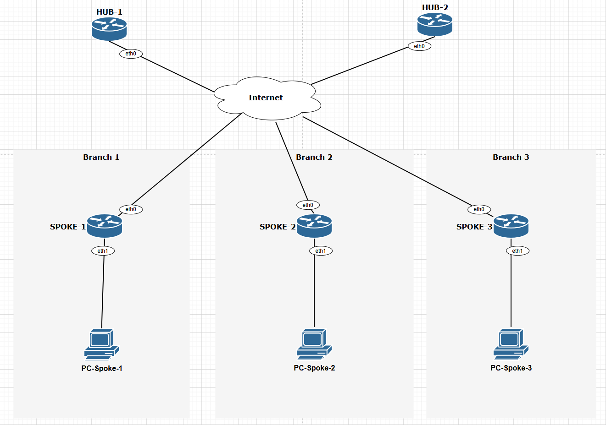

DMVPN Dual HUB Dual Cloud
This document is to describe a basic setup to build DVMPN network with two Hubs and two clouds using DMVPN Phase3. OSPF is used as routing protocol inside DMVPN.
In this example we use VyOS 1.5 as HUBs and Spokes (HUB-1, HUB-2, SPOKE-2, SPOKE-3) and Cisco IOSv 15.5(3)M (SPOKE-1) as a Spoke.
Network Topology


Configurations
Underlay configuration
Networks 192.168.X.0/24 are used as LANs for every spoke.
HUB-1
set interfaces ethernet eth0 address '10.0.0.2/30'
set protocols static route 0.0.0.0/0 next-hop 10.0.0.1
HUB-2
set interfaces ethernet eth0 address '10.0.1.2/30'
set protocols static route 0.0.0.0/0 next-hop 10.0.1.1
Spoke-1
interface GigabitEthernet0/0
ip address 10.0.11.2 255.255.255.252
duplex auto
speed auto
media-type rj45
!
interface GigabitEthernet0/1
ip address 192.168.11.1 255.255.255.0
ip ospf 1 area 0
duplex auto
speed auto
media-type rj45
!
ip route 0.0.0.0 0.0.0.0 10.0.11.1
Spoke-2
set interfaces ethernet eth0 address '10.0.12.2/30'
set interfaces ethernet eth1 address '192.168.12.1/24'
set protocols static route 0.0.0.0/0 next-hop 10.0.12.1
Spoke-3
set interfaces ethernet eth0 address '10.0.13.2/30'
set interfaces ethernet eth1 address '192.168.13.1/24'
set protocols static route 0.0.0.0/0 next-hop 10.0.13.1
NHRP configuration
The next step is to configure the NHRP protocol. In a Dual cloud network, every HUB has to be configured with one GRE multipoint tunnel interface and every spoke has to be configured with two tunnel interfaces, one tunnel to each hub. In this example tunnel networks are 10.100.100.0/32 for the first cloud and 10.100.100.0/32 for the second cloud. But VyOS uses FRR for NHRP, that is why the tunnel address mask must be /32.
HUB-1
set interfaces tunnel tun100 address '10.100.100.1/32'
set interfaces tunnel tun100 enable-multicast
set interfaces tunnel tun100 encapsulation 'gre'
set interfaces tunnel tun100 ip adjust-mss '1360'
set interfaces tunnel tun100 mtu '1436'
set interfaces tunnel tun100 parameters ip key '42'
set interfaces tunnel tun100 source-interface 'eth0'
set protocols nhrp tunnel tun100 authentication 'vyos'
set protocols nhrp tunnel tun100 holdtime '300'
set protocols nhrp tunnel tun100 multicast 'dynamic'
set protocols nhrp tunnel tun100 network-id '1'
set protocols nhrp tunnel tun100 redirect
set protocols nhrp tunnel tun100 registration-no-unique
HUB-2
set interfaces tunnel tun101 address '10.100.101.1/32'
set interfaces tunnel tun101 enable-multicast
set interfaces tunnel tun101 encapsulation 'gre'
set interfaces tunnel tun101 ip adjust-mss '1360'
set interfaces tunnel tun101 mtu '1436'
set interfaces tunnel tun101 parameters ip key '43'
set interfaces tunnel tun101 source-interface 'eth0'
set protocols nhrp tunnel tun101 authentication 'vyos'
set protocols nhrp tunnel tun101 holdtime '300'
set protocols nhrp tunnel tun101 multicast 'dynamic'
set protocols nhrp tunnel tun101 network-id '2'
set protocols nhrp tunnel tun101 redirect
set protocols nhrp tunnel tun101 registration-no-unique
Spoke-1
interface Tunnel100
ip address 10.100.100.11 255.255.255.0
no ip redirects
ip mtu 1436
ip nhrp authentication vyos
ip nhrp map multicast 10.0.0.2
ip nhrp network-id 1
ip nhrp holdtime 300
ip nhrp nhs 10.100.100.1 nbma 10.0.0.2
ip nhrp shortcut
ip tcp adjust-mss 1360
tunnel source GigabitEthernet0/0
tunnel mode gre multipoint
tunnel key 42
!
interface Tunnel101
ip address 10.100.101.11 255.255.255.0
no ip redirects
ip mtu 1436
ip nhrp authentication vyos
ip nhrp map multicast 10.0.1.2
ip nhrp network-id 2
ip nhrp holdtime 300
ip nhrp nhs 10.100.101.1 nbma 10.0.1.2
ip nhrp shortcut
ip tcp adjust-mss 1360
tunnel source GigabitEthernet0/0
tunnel mode gre multipoint
tunnel key 43
Spoke-2
set interfaces tunnel tun100 address '10.100.100.12/32'
set interfaces tunnel tun100 enable-multicast
set interfaces tunnel tun100 encapsulation 'gre'
set interfaces tunnel tun100 ip adjust-mss '1360'
set interfaces tunnel tun100 mtu '1436'
set interfaces tunnel tun100 parameters ip key '42'
set interfaces tunnel tun100 source-interface 'eth0'
set interfaces tunnel tun101 address '10.100.101.12/32'
set interfaces tunnel tun101 enable-multicast
set interfaces tunnel tun101 encapsulation 'gre'
set interfaces tunnel tun101 ip adjust-mss '1360'
set interfaces tunnel tun101 mtu '1436'
set interfaces tunnel tun101 parameters ip key '43'
set interfaces tunnel tun101 source-interface 'eth0'
set protocols nhrp tunnel tun100 authentication 'vyos'
set protocols nhrp tunnel tun100 holdtime '300'
set protocols nhrp tunnel tun100 multicast '10.0.0.2'
set protocols nhrp tunnel tun100 network-id '1'
set protocols nhrp tunnel tun100 nhs tunnel-ip dynamic nbma '10.0.0.2'
set protocols nhrp tunnel tun100 registration-no-unique
set protocols nhrp tunnel tun100 shortcut
set protocols nhrp tunnel tun101 authentication 'vyos'
set protocols nhrp tunnel tun101 holdtime '300'
set protocols nhrp tunnel tun101 multicast '10.0.1.2'
set protocols nhrp tunnel tun101 network-id '2'
set protocols nhrp tunnel tun101 nhs tunnel-ip dynamic nbma '10.0.1.2'
set protocols nhrp tunnel tun101 registration-no-unique
set protocols nhrp tunnel tun101 shortcut
Spoke-3
set protocols nhrp tunnel tun100 authentication 'vyos'
set protocols nhrp tunnel tun100 holdtime '300'
set protocols nhrp tunnel tun100 multicast '10.0.0.2'
set protocols nhrp tunnel tun100 network-id '1'
set protocols nhrp tunnel tun100 nhs tunnel-ip dynamic nbma '10.0.0.2'
set protocols nhrp tunnel tun100 registration-no-unique
set protocols nhrp tunnel tun100 shortcut
set protocols nhrp tunnel tun101 authentication 'vyos'
set protocols nhrp tunnel tun101 holdtime '300'
set protocols nhrp tunnel tun101 multicast '10.0.1.2'
set protocols nhrp tunnel tun101 network-id '2'
set protocols nhrp tunnel tun101 nhs tunnel-ip dynamic nbma '10.0.1.2'
set protocols nhrp tunnel tun101 registration-no-unique
set protocols nhrp tunnel tun101 shortcut
Overlay configuration
The last step is to configure the routing protocol. In this scenario, OSPF was chosen as the dynamic routing protocol. But you can use iBGP or eBGP. To form fast convergence it is possible to use BFD protocol.
HUB-1
set protocols ospf interface tun100 area '0'
set protocols ospf interface tun100 network 'point-to-multipoint'
set protocols ospf interface tun100 passive disable
set protocols ospf passive-interface 'default'
HUB-2
set protocols ospf interface tun101 area '0'
set protocols ospf interface tun101 network 'point-to-multipoint'
set protocols ospf interface tun101 passive disable
set protocols ospf passive-interface 'default'
Spoke-1
interface Tunnel100
ip ospf network point-to-multipoint
ip ospf dead-interval 40
ip ospf hello-interval 10
ip ospf 1 area 0
!
interface Tunnel101
ip ospf network point-to-multipoint
ip ospf dead-interval 40
ip ospf hello-interval 10
ip ospf 1 area 0
!
router ospf 1
passive-interface default
no passive-interface Tunnel100
no passive-interface Tunnel101
Spoke-2
set protocols ospf interface eth1 area '0'
set protocols ospf interface tun100 area '0'
set protocols ospf interface tun100 network 'point-to-multipoint'
set protocols ospf interface tun100 passive disable
set protocols ospf interface tun101 area '0'
set protocols ospf interface tun101 network 'point-to-multipoint'
set protocols ospf interface tun101 passive disable
set protocols ospf passive-interface 'default'
Spoke-3
set protocols ospf interface eth1 area '0'
set protocols ospf interface tun100 area '0'
set protocols ospf interface tun100 network 'point-to-multipoint'
set protocols ospf interface tun100 passive disable
set protocols ospf interface tun101 area '0'
set protocols ospf interface tun101 network 'point-to-multipoint'
set protocols ospf interface tun101 passive disable
set protocols ospf passive-interface 'default'
Security configuration
Tunnels can be encrypted by IPSEC for security.
HUB-1
set vpn ipsec esp-group ESP-HUB lifetime '1800' set vpn ipsec esp-group ESP-HUB mode 'transport' set vpn ipsec esp-group ESP-HUB pfs 'disable' set vpn ipsec esp-group ESP-HUB proposal 1 encryption 'aes256' set vpn ipsec esp-group ESP-HUB proposal 1 hash 'sha1' set vpn ipsec ike-group IKE-HUB key-exchange 'ikev1' set vpn ipsec ike-group IKE-HUB lifetime '3600' set vpn ipsec ike-group IKE-HUB proposal 1 dh-group '2' set vpn ipsec ike-group IKE-HUB proposal 1 encryption 'aes256' set vpn ipsec ike-group IKE-HUB proposal 1 hash 'sha1' set vpn ipsec interface 'eth0' set vpn ipsec profile NHRPVPN authentication mode 'pre-shared-secret' set vpn ipsec profile NHRPVPN authentication pre-shared-secret 'secret' set vpn ipsec profile NHRPVPN bind tunnel 'tun100' set vpn ipsec profile NHRPVPN esp-group 'ESP-HUB' set vpn ipsec profile NHRPVPN ike-group 'IKE-HUB'
HUB-2
set vpn ipsec esp-group ESP-HUB lifetime '1800' set vpn ipsec esp-group ESP-HUB mode 'transport' set vpn ipsec esp-group ESP-HUB pfs 'disable' set vpn ipsec esp-group ESP-HUB proposal 1 encryption 'aes256' set vpn ipsec esp-group ESP-HUB proposal 1 hash 'sha1' set vpn ipsec ike-group IKE-HUB key-exchange 'ikev1' set vpn ipsec ike-group IKE-HUB lifetime '3600' set vpn ipsec ike-group IKE-HUB proposal 1 dh-group '2' set vpn ipsec ike-group IKE-HUB proposal 1 encryption 'aes256' set vpn ipsec ike-group IKE-HUB proposal 1 hash 'sha1' set vpn ipsec interface 'eth0' set vpn ipsec profile NHRPVPN authentication mode 'pre-shared-secret' set vpn ipsec profile NHRPVPN authentication pre-shared-secret 'secret' set vpn ipsec profile NHRPVPN bind tunnel 'tun101' set vpn ipsec profile NHRPVPN esp-group 'ESP-HUB' set vpn ipsec profile NHRPVPN ike-group 'IKE-HUB'
VyOS Spokes have the same configuration
set vpn ipsec esp-group ESP-HUB lifetime '1800' set vpn ipsec esp-group ESP-HUB mode 'transport' set vpn ipsec esp-group ESP-HUB pfs 'disable' set vpn ipsec esp-group ESP-HUB proposal 1 encryption 'aes256' set vpn ipsec esp-group ESP-HUB proposal 1 hash 'sha1' set vpn ipsec ike-group IKE-HUB key-exchange 'ikev1' set vpn ipsec ike-group IKE-HUB lifetime '3600' set vpn ipsec ike-group IKE-HUB proposal 1 dh-group '2' set vpn ipsec ike-group IKE-HUB proposal 1 encryption 'aes256' set vpn ipsec ike-group IKE-HUB proposal 1 hash 'sha1' set vpn ipsec interface 'eth0' set vpn ipsec profile NHRPVPN authentication mode 'pre-shared-secret' set vpn ipsec profile NHRPVPN authentication pre-shared-secret 'secret' set vpn ipsec profile NHRPVPN bind tunnel 'tun100' set vpn ipsec profile NHRPVPN bind tunnel 'tun101' set vpn ipsec profile NHRPVPN esp-group 'ESP-HUB' set vpn ipsec profile NHRPVPN ike-group 'IKE-HUB'
SPOKE-1
crypto isakmp policy 1 encr aes 256 authentication pre-share group 2 lifetime 3600 crypto isakmp key secret address 0.0.0.0 ! ! crypto ipsec transform-set ESP_TRANSFORMSET esp-aes 256 esp-sha-hmac mode transport ! ! crypto ipsec profile gre_protection set security-association lifetime seconds 1800 set transform-set ESP_TRANSFORMSET ! interface Tunnel100 tunnel protection ipsec profile gre_protection shared ! interface Tunnel101 tunnel protection ipsec profile gre_protection shared
Monitoring
All spokes created IPSec tunnels to Hubs, are registered on Hubs using NHRP protocol and formed adjacency in OSPF.
vyos@HUB-1:~$ show vpn ipsec sa
Connection State Uptime Bytes In/Out Packets In/Out Remote address Remote ID Proposal
-------------------------- ------- -------- -------------- ---------------- ---------------- ----------- ------------------------
dmvpn-NHRPVPN-tun100-child up 6m1s 4K/5K 51/56 10.0.13.2 10.0.13.2 AES_CBC_256/HMAC_SHA1_96
dmvpn-NHRPVPN-tun100-child up 6m36s 4K/6K 56/65 10.0.12.2 10.0.12.2 AES_CBC_256/HMAC_SHA1_96
dmvpn-NHRPVPN-tun100-child up 8m49s 6K/6K 73/77 10.0.11.2 10.0.11.2 AES_CBC_256/HMAC_SHA1_96
vyos@HUB-1:~$ show ip nhrp cache
Iface Type Protocol NBMA Claimed NBMA Flags Identity
tun100 dynamic 10.100.100.12 10.0.12.2 10.0.12.2 T 10.0.12.2
tun100 dynamic 10.100.100.13 10.0.13.2 10.0.13.2 T 10.0.13.2
tun100 dynamic 10.100.100.11 10.0.11.2 10.0.11.2 T 10.0.11.2
tun100 local 10.100.100.1 10.0.0.2 10.0.0.2 -
vyos@HUB-1:~$ show ip ospf neighbor
Neighbor ID Pri State Up Time Dead Time Address Interface RXmtL RqstL DBsmL
192.168.11.1 1 Full/DROther 17m01s 36.201s 10.100.100.11 tun100:10.100.100.1 0 0 0
192.168.12.1 1 Full/DROther 9m42s 37.443s 10.100.100.12 tun100:10.100.100.1 0 0 0
192.168.13.1 1 Full/DROther 9m15s 35.053s 10.100.100.13 tun100:10.100.100.1 0 0 0
First, we see that LANs are accessible through hubs using OSPF routes.
SPOKE-1#show ip route
Codes: L - local, C - connected, S - static, R - RIP, M - mobile, B - BGP
D - EIGRP, EX - EIGRP external, O - OSPF, IA - OSPF inter area
N1 - OSPF NSSA external type 1, N2 - OSPF NSSA external type 2
E1 - OSPF external type 1, E2 - OSPF external type 2
i - IS-IS, su - IS-IS summary, L1 - IS-IS level-1, L2 - IS-IS level-2
ia - IS-IS inter area, * - candidate default, U - per-user static route
o - ODR, P - periodic downloaded static route, H - NHRP, l - LISP
a - application route
+ - replicated route, % - next hop override, p - overrides from PfR
Gateway of last resort is 10.0.11.1 to network 0.0.0.0
.....
192.168.11.0/24 is variably subnetted, 2 subnets, 2 masks
C 192.168.11.0/24 is directly connected, GigabitEthernet0/1
L 192.168.11.1/32 is directly connected, GigabitEthernet0/1
O 192.168.12.0/24 [110/1002] via 10.100.101.1, 00:14:36, Tunnel101
[110/1002] via 10.100.100.1, 00:16:13, Tunnel100
O 192.168.13.0/24 [110/1002] via 10.100.101.1, 00:14:36, Tunnel101
[110/1002] via 10.100.100.1, 00:15:45, Tunnel100
vyos@SPOKE-2:~$ show ip route
Codes: K - kernel route, C - connected, L - local, S - static,
R - RIP, O - OSPF, I - IS-IS, B - BGP, E - EIGRP, N - NHRP,
T - Table, v - VNC, V - VNC-Direct, A - Babel, F - PBR,
f - OpenFabric, t - Table-Direct,
> - selected route, * - FIB route, q - queued, r - rejected, b - backup
t - trapped, o - offload failure
......
O>* 192.168.11.0/24 [110/3] via 10.100.100.1, tun100 onlink, weight 1, 00:12:36
* via 10.100.101.1, tun101 onlink, weight 1, 00:12:36
O 192.168.12.0/24 [110/1] is directly connected, eth1, weight 1, 01:24:40
C>* 192.168.12.0/24 is directly connected, eth1, weight 1, 01:24:43
L>* 192.168.12.1/32 is directly connected, eth1, weight 1, 01:24:43
O>* 192.168.13.0/24 [110/3] via 10.100.100.1, tun100 onlink, weight 1, 00:12:36
* via 10.100.101.1, tun101 onlink, weight 1, 00:12:36
After initiating traffic between SPOKES sites, Phase 3 of DMVPN will work. For instance, traceroute was generated from PC-SPOKE-2 to PC-SPOKE-1
PC-SPOKE-2 : 192.168.12.2 255.255.255.0 gateway 192.168.12.1
PC-SPOKE-2> trace 192.168.11.2
trace to 192.168.11.2, 8 hops max, press Ctrl+C to stop
1 192.168.12.1 0.558 ms 0.378 ms 0.561 ms
2 10.100.101.1 1.768 ms 1.158 ms 1.744 ms
3 10.100.101.11 7.196 ms 4.971 ms 4.793 ms
4 *192.168.11.2 7.747 ms (ICMP type:3, code:3, Destination port unreachable)
PC-SPOKE-2> trace 192.168.11.2
trace to 192.168.11.2, 8 hops max, press Ctrl+C to stop
1 192.168.12.1 0.562 ms 0.396 ms 0.364 ms
2 10.100.100.11 4.401 ms 4.399 ms 4.174 ms
3 *192.168.11.2 3.241 ms (ICMP type:3, code:3, Destination port unreachable)
First trace goes via HUB but the second goes directly from SPOKE-1 to SPOKE-2. Now routing tables are changed. LAN networks 192.168.12.0/24 and 192.168.11.0/24 available directly via SPOKES.
vyos@SPOKE-2:~$ show ip route
Codes: K - kernel route, C - connected, L - local, S - static,
R - RIP, O - OSPF, I - IS-IS, B - BGP, E - EIGRP, N - NHRP,
T - Table, v - VNC, V - VNC-Direct, A - Babel, F - PBR,
f - OpenFabric, t - Table-Direct,
> - selected route, * - FIB route, q - queued, r - rejected, b - backup
t - trapped, o - offload failure
N>* 192.168.11.0/24 [10/0] via 10.100.100.11, tun100 onlink, weight 1, 00:00:14
O 192.168.11.0/24 [110/3] via 10.100.100.1, tun100 onlink, weight 1, 00:00:54
via 10.100.101.1, tun101 onlink, weight 1, 00:00:54
SPOKE-1# show ip route next-hop-override
Codes: L - local, C - connected, S - static, R - RIP, M - mobile, B - BGP
D - EIGRP, EX - EIGRP external, O - OSPF, IA - OSPF inter area
N1 - OSPF NSSA external type 1, N2 - OSPF NSSA external type 2
E1 - OSPF external type 1, E2 - OSPF external type 2
i - IS-IS, su - IS-IS summary, L1 - IS-IS level-1, L2 - IS-IS level-2
ia - IS-IS inter area, * - candidate default, U - per-user static route
o - ODR, P - periodic downloaded static route, H - NHRP, l - LISP
a - application route
+ - replicated route, % - next hop override, p - overrides from PfR
Gateway of last resort is 10.0.11.1 to network 0.0.0.0
O % 192.168.12.0/24 [110/1002] via 10.100.101.1, 00:24:09, Tunnel101
[110/1002] via 10.100.100.1, 00:25:46, Tunnel100
[NHO][110/1] via 10.100.100.12, 00:00:03, Tunnel100
NHRP shows shortcuts on Spokes
vyos@SPOKE-2:~$ show ip nhrp shortcut
Type Prefix Via Identity
dynamic 192.168.11.0/24 10.100.100.11 10.0.11.2
SPOKE-1# show ip nhrp shortcut
10.100.100.12/32 via 10.100.100.12
Tunnel100 created 00:09:59, expire 00:02:21
Type: dynamic, Flags: router nhop rib nho
NBMA address: 10.0.12.2
192.168.12.0/24 via 10.100.100.12
Tunnel100 created 00:02:38, expire 00:02:21
Type: dynamic, Flags: router rib nho
NBMA address: 10.0.12.2
A new Spoke to Spoke IPSec tunnel is created
SPOKE-1#show crypto isakmp sa
IPv4 Crypto ISAKMP SA
dst src state conn-id status
10.0.0.2 10.0.11.2 QM_IDLE 1002 ACTIVE
10.0.12.2 10.0.11.2 QM_IDLE 1004 ACTIVE
10.0.1.2 10.0.11.2 QM_IDLE 1003 ACTIVE
vyos@SPOKE-2:~$ show vpn ipsec sa
Connection State Uptime Bytes In/Out Packets In/Out Remote address Remote ID Proposal
-------------------------- ------- -------- -------------- ---------------- ---------------- ----------- ------------------------
dmvpn-NHRPVPN-tun100-child up 7m26s 4K/4K 57/53 10.0.0.2 10.0.0.2 AES_CBC_256/HMAC_SHA1_96
dmvpn-NHRPVPN-tun100-child up 11m48s 316B/1K 3/15 10.0.11.2 10.0.11.2 AES_CBC_256/HMAC_SHA1_96
dmvpn-NHRPVPN-tun101-child up 5m58s 5K/4K 62/51 10.0.1.2 10.0.1.2 AES_CBC_256/HMAC_SHA1_96
Summary
If one of the Hubs loses connectivity to the Internet, the other Hub will be available and take the main role. This is a simple example where only one internet connection is used. But in the real world, there can be two connections to the Internet. In this case, there is a recommendation to build each tunnel via each Internet connection, choose the main cloud, and manipulate traffic via a routing protocol. It allows the creation failover on link-level connections too.